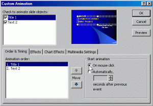

I had the following problem(s):
- I had a fairly large presentation which I had to share among several people for review.
- Not everyone was running the same version of Powerpoint, and not everyone used Windows.
- People who wouldn’t be able to make it to my actual presentation wanted to be able to view it (along with the voice narration) later.
- I wanted it to be accessible and usable by everyone regardless of the OS, the browser, or the presentation software they were using.
I figured this was a pretty common problem that many people face and a documented solution would be nice. More so, since someone I demonstrated this solution to now swears by it and can’t thank me enough. So I figured, why not spread the knowledge :) (Unfortunately, this solution works only if you are using Windows XP/Vista. Sorry, I couldn’t find the right tools to make it work on MAC OS X.)
Here’s the bird’s eye view of my solution:
- Prep your presentation to be made ‘complete’ and ‘kiosk-ready’.
- Download and install AuthorPoint Lite.
- Import the presentation into AuthorPoint Lite, and preserve the rehearse timings, animations, and (optionally) narration.
- Convert the presentation to flash using AuthorPoint Lite.
- Upload the generated swf file online for the world to see!
- The End.
Prepping your presentation
Before you can make a presentation portable, you have got to make sure that the presentation itself has enough information in it to be portable. Also, you have to ensure that the presentation have been configured so that the tools you will use to make it portable can use it to advantage.
So here’s how you would go about the job:
Ensure all information is available
When are making a presentation portable, then, more often than not, the people who will access it will not have the luxury of you walking through the presentation for them. So make sure you have notes for each slide for the presentation to be understandable on its own, even without the speaker present. It often a good idea to include the text of your narration for each slide in the Slide Notes section.
Recording Narration
You also have the choice of recording your narration. You can do this if you would like people to be able to view and hear your presentation online. In order to record your presentation (Assuming you have a workgin microphone to record) you need to do the following:
- Ensure that you have no automatic animations set. You can do that as follows:
- Click on the Slide Show menu and choose Custom Animation.
- Click on the first item in the Animation Order box on the Order & Timing tab.
- Select the On Mouse Click radio button under Start Animation as shown in the figure below.
- Test your microphone by opening Slide Show -> Record Narration -> Set Microphone Level button. You’ll see the Microphone Check dialog box pop up. Set the level appropriately as shown below:

- You can adjust the sound quality if you like:

- DO NOT check the ‘Link the Narrations’ checkbox! This option being unchecked is very important for portability!
- Now start recording you narration and manually click through the slides (and animation) as you narrate into the microphone. You can stop anytime by pressing [Esc]. After you reach the last slide, or after you press [Esc], PowerPoint will ask if you’d like to save the slide timings. Click No. (As shown below):

- Now you can browse through the slides and review your narration by clicking on the
 icon. You can delete the narration on each slide and record the narration if necessary.
icon. You can delete the narration on each slide and record the narration if necessary.


Rehearsing Timing
Click on the Slide Show menu and choose Rehearse Timings. You’ll immediately be transferred into Slideshow View, and the narration should begin. You’ll see a Rehearsal toolbar appear:

Advance through the presentation by advancing to the next slide when the narration for each slide is complete. Also make sure that you step through the animation appropriately. When you’ve scrolled through the entire presentation, PowerPoint will again ask if you’d like to save the timings. Click Yes.
Now your presentation is self-contained and complete. However, it is still a .ppt file. To make it portable, you need to convert it to a more portable format. My choice is ShockWave File, or Flash format.
AuthorPoint Lite
AuthorPoint Lite is a free Powerpoint-to-Flash converter. The neat thing about this software is that it can import all the settings from a powerpoint slide including narration, rehearsed timing, custom animation etc. Here is a great review on AuthorPoint Lite.
- Download and install AuthorPoint Lite
- Import your presentation into AuthorPoint Lite.
- Save it as a swf file.
Uploading the swf file
Now upload the saved swf file to your webserver, and provide a link to it on your website. This swf file is your presentation complete with your narration, animation, slide timings, your slide notes, etc. And the best part is that sinceits a swf file, any browser with a flash plugin can play this file! Truly portable!
Enjoy
The End
:)


{kind=link}
Comments are disabled for this post